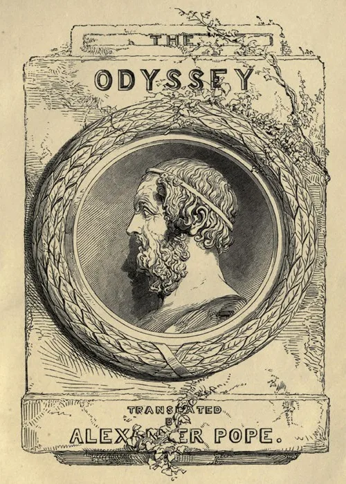

Literatura Clássica Grega
The Odyssey
por HomerApós dez anos de guerra, Odisseu, rei de Ítaca, embarca em uma jornada épica para retornar para casa. Acompanhado por um grupo de guerreiros leais, ele enfrenta perigos inimagináveis: monstros marinhos, deuses caprichosos e a tentação do tempo. Sua busca é marcada pela astúcia, coragem e perseverança, enquanto sua esposa Penélope luta contra os pretendentes que clamam o trono e a mão dela.
Pontos de Atenção & Perspectiva Crítica
Aspectos essenciais que o leitor deve ter em mente ao explorar esta obra:
Minha Opinião sobre The Odyssey
Em breve: resenha e opinião crítica do leitor após a conclusão da leitura da obra no app.
